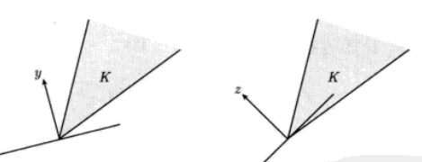

凸优化13：对偶锥与广义不等式
对偶锥
定义
令$K$为一个锥，则集合$K^{\ast}=\{y|x^Ty\geq0,\forall x\in K\}$称为$K$的对偶锥。顾名思义，$K^{\ast}$是一个锥，且其总是凸的，即使$K$不是凸锥。
从几何上看，$y\in K^{\ast}$当且仅当$-y$是$K$在原点的一个支撑超平面的法线，如下图所示


上面的左图中，以$y$为法向量的半平面包含锥$K$，因此$y\in K^{\ast}$；右图中，以$z$为内法向量的半空间不包含$K$，因此$z\not\in K^{\ast}$
性质
可以导出对偶锥满足下面的性质
- $K^*$是闭凸锥
- $K_1\subseteq K_2$可以导出$K_2^{\ast}\subseteq K_1^{\ast}$
- 如果$K$有非空内部，那么$K^{\ast}$是尖的
- 如果$K$的闭包是尖的，那么$K^{\ast}$有非空内部
- $K^{\ast\ast}$是$K$的凸包的闭包。因此如果$K$是凸的、闭的，那么$K^{\ast\ast}=K$
广义不等式的对偶
假设凸锥$K$是正常锥，则可以导出一个广义不等式$\preceq_K$。其对偶锥$K^{\ast}$也是正常的，所以也能导出一个广义不等式，称$\preceq_{K^\ast}$为广义不等式$\preceq_K$的对偶。
关于广义不等式及其对偶也有重要的性质
- $x\preceq_K y$当且仅当任意$\lambda\succeq_{K^\ast}0$有$\lambda^Tx\leq \lambda^Ty$
- $x\prec_Ky$当且仅当任意$\lambda\succeq_{K^\ast}0$和$\lambda\neq0$有$\lambda^Tx<\lambda^Ty$
对偶不等式定义的最小元和极小元
最小元的对偶
首先考虑最小元的性质，$x$是$S$上关于广义不等式$\preceq_K$的最小元的充要条件是对于$\lambda\succ_{K^\ast}0$，$x$是在$z\in S$上极小化$\lambda^Tz$的唯一最优解。几何上看，这意味着对于任意$\lambda\succ_{K^\ast}0$，超平面$\{z|\lambda^T(z-x)=0\}$是在$x$处对$S$的一个严格支撑超平面（严格支撑表示超平面与$S$只相交于$x$）。这里没有要求$S$是凸集。
极小元的对偶性质
如果$\lambda\succ_{K^\ast}0$并且$x$在$z\in S$上极小化$\lambda^Tz$，那么$x$是极小的。
其逆定理在一般情况下不成立：$S$上的极小元$x$可以对于任何$\lambda$都不是$z\in S$上极小化$\lambda^Tz$的解。